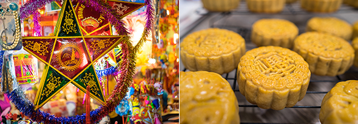

와 제 롤모델이 잡스에요!!! 아이폰 첫 출시되고 나서부터 계속 아이폰 쓰고 있는데 잡스가 너무 그리워요ㅠㅠ 지금은 돈만 벌려고 하는 것 같아서 디자인 발전도 없고ㅠㅠ와 제 롤모델이 잡스에요!!! 아이폰 첫 출시되고 나서부터 계속 아이폰 쓰고 있는데 잡스가 너무 그리워요ㅠㅠ 지금은 돈만 벌려고 하는 것 같아서 디자인 발전도 없고ㅠㅠ와 제 롤모델이 잡스에요!!! 아이폰 첫 출시되고 나서부터 계속 아이폰 쓰고 있는데 잡스가 너무 그리워요ㅠㅠ 지금은 돈만 벌려고 하는 것 같아서 디자인 발전도 없고ㅠㅠ와 제 롤모델이 잡스에요!!! 아이폰 첫 출시되고 나서부터 계속 아이폰 쓰고 있는데 잡스가 너무 그리워요ㅠㅠ 지금은 돈만 벌려고 하는 것 같아서 디자인 발전도 없고ㅠㅠ와 제 롤모델이 잡스에요!!! 아이폰 첫 출시되고 나서부터 계속 아이폰 쓰고 있는데 잡스가 너무 그리워요ㅠㅠ 지금은 돈만 벌려고 하는 것 같아서 디자인 발전도 없고ㅠㅠ
Cultural Odyssey
How Does the World Celebrate Harvest?
How Does the World Celebrate Harvest?


By Tim Alper(Journalist)
Harvesting – reaping the fruits of agriculture – is one of the oldest activities known to mankind. Anthropologists say it is the activity that truly made us human. Homo sapiens’ journey from nomadic hunter-gatherer to harvesting farmer is, in fact, the story of modern civilization.
The harvest is the zenith of the agricultural year: the end-point of summer. It is also an occasion for farmers to take pride in their achievement – and for non-farmers to congratulate agriculturalists for their hard work. It is not surprising, then, that most of the world looks to usher harvest in with flamboyant, joyful festivities.
Eastern Gatherings
In much of Asia, the Lunar Calendar still plays a key part in everyday life, and Harvest Moon celebrations are widespread. The Harvest Moon is the closest full moon to the autumnal equinox. This moon typically rises just after sunset, allowing farmers to reap crops even after nightfall.
In Asia’s rural past, the Harvest Moon was momentous: cause for large, communal revelries, and an occasion for families or entire villages to take a break from their exertions in the fields. It was a time of rest, gathering and celebration.
In Korea, the Harvest Moon festival is called Chuseok (literally “great mid-autumn”), and is still a three-day-long public holiday. The celebration pre-dates organized religions like Buddhism, Taoism and Christianity, and still now begins with familial ancestral rites ceremonies, where Koreans thank the spirits of the dead for helping to usher in a successful harvest.
Villagers everywhere once gathered for Ganggangsullae, a song-and-dance ritual performed exclusively by women, and dating back to at least 3,000 BC. Ganggangsullae dancers implore the moon to deliver bountiful harvests. The ritual is still performed today, and in 2009 was added to the UNESCO Intangible Cultural Heritage of Humanity list.
Ganggangsullae dance
Table for the ancestral rite
In China, the Harvest Moon festivities are known as the Mid-Autumn Festival. A jubilant public holiday that regularly sees massive, seasonal migrations of city-dwellers to parental hometowns, modern Chinese celebrate with sugary mooncakes – sweet delights filled with lotus seed paste, Tet Trung Thured beans or jujubes. Revelers perform dragon and lion dances in streets and town squares.
Meanwhile, in Vietnam, the same holiday is called Tet Trung Thu – a festival of light. City streets fill up with daybreak lantern parades, as children bear bright star- and moon-shaped lanterns. The ceremony is steeped in symbolic meaning: the luminescence of the parades is a physical expression of a shared wish for the revitalizing sun to return strong after its wintertime repose.
Vietnam- Tet Trung Thu
Western Celebrations
In the West, most modern harvest festivals have been shaped by centuries of organized religion. The festival of Sukkot (the “Festival of Gathering”) requires Jews in Israel and elsewhere to construct small booths in their fields, using branches and leaves. Adherents hang seasonal fruit, cereals and vegetables from the booths’ frames, and eat family meals in these makeshift structures.
In the UK, harvest festival is regulated by the Anglican Church, which collects food donations – symbolizing surplus harvest bounties – distributing the supplies to the poor. In modern Britain, schools often fulfill the same role for secular folk – with groups of children bringing tinned goods to food banks.
Perhaps most notable of all European harvest festivals is Oktoberfest, a massive draw in Bavaria, Germany, for both tourists and locals in September every year. Now famous for its beer and sausages, it actually began as a celebration of the grape harvest. It was originally performed by vintners who picked their vineyards clean before the grapes could be devastated by the first frosts of fall.
Even in 2018, a time when technology requires few of us to work on farms, our great agricultural festivals retain every ounce of their age-old meaning – offering the world an occasion to enjoy communal happiness and familial love.

By Tim Alper(Journalist)
Tim Alper is a British journalist who has lived in Seoul for 11 years. He has contributed to publications such as The Guardian, The Jewish Chronicle, Joongang Ilbo, Weekly Chosun and Korean Air’s Morning Calm. He is also the author of the book Bananas & Couscous and the co-author of Have Fork, Will Travel.
-
Great
322
-
Like
322
-
Sad
322
-
So-so
322
-
Angry
322